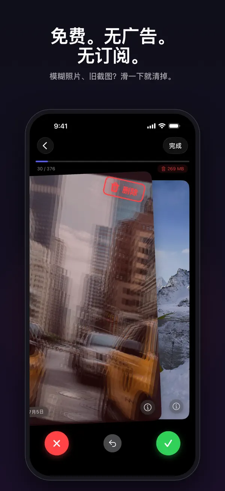
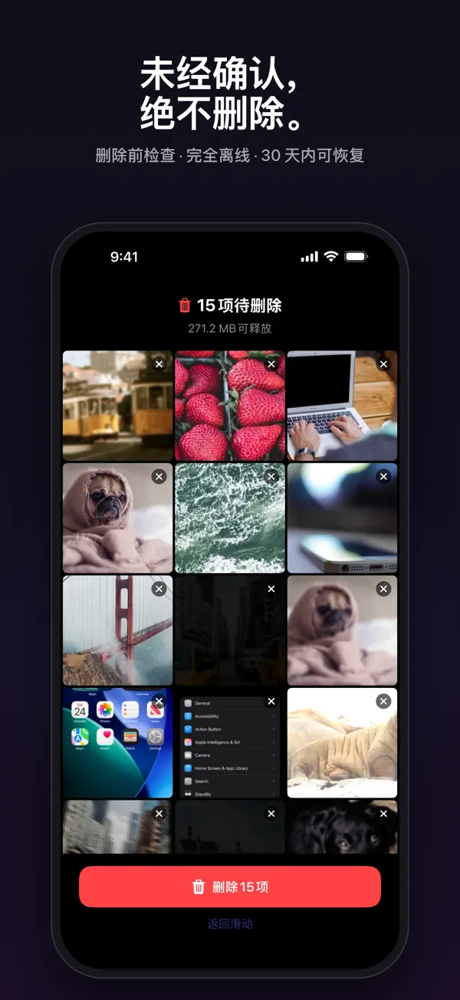
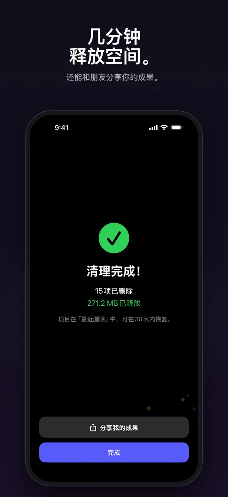

给 iPhone 减负。
向左滑删除，向右滑保留。
Swiped 是一款适用于 iPhone 和 iPad 的照片与视频清理应用。几分钟整理上千张照片，无广告、无订阅、无需账户。你的照片永远不会离开手机。
- 免费
- 无广告
- 无订阅
- 无需账户
- 照片不离开你的 iPhone




使用方法
- 1选择一个相簿，或整个图库。
- 2向右保留，向左删除。随时可以撤销。
- 3检查你的选择，确认，释放空间。
只做必要的事
隐私优先
一切都在你的 iPhone 上完成。Swiped 不收集任何数据（App Store 显示“未收集数据”）。
安全删除
在你检查所选照片之前不会删除任何内容。删除的照片会在“最近删除”中保留 30 天。
找出大文件
按照片、视频或截屏，按日期和大小筛选，找出最占空间的文件。
空间计数器
每次滑动时实时显示即将释放的空间。
无限撤销
改变主意了？想退回几张就退回几张。
稍后继续
每次滑动都会保存进度。明天回来接着整理。
常见问题
Swiped 真的免费吗？
是的。滑动、检查和删除都免费，没有广告、没有订阅、无需账户。以后可能会推出一次性购买的可选功能，但绝不会是订阅。
我的照片会离开 iPhone 吗？
不会。Swiped 只在你的 iPhone 上查看照片。它没有服务器，也不收集任何数据。
删除的照片会怎样？
在你确认之前不会删除任何内容。之后 iOS 会把它们移到“最近删除”，30 天内都可以恢复。
支持 iCloud 照片吗？
支持。存储在 iCloud 中的照片也会显示，在 Swiped 中删除照片会像在“照片”应用中一样在所有设备上删除。
支持哪些设备？
iOS 16 或更高版本的 iPhone 和 iPad，支持 9 种语言。
有 Android 版吗？
没有。Swiped 仅适用于 iPhone 和 iPad。Android 或 App Store 上名称相似的应用与它无关。
Swiped - 照片清理与删除
在 App Store 下载iPhone · iPad · 免费